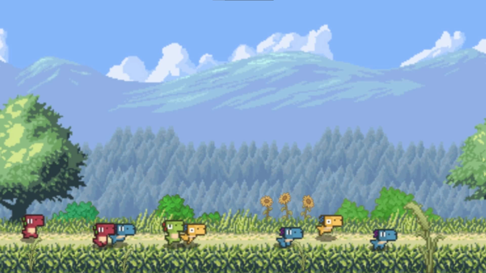
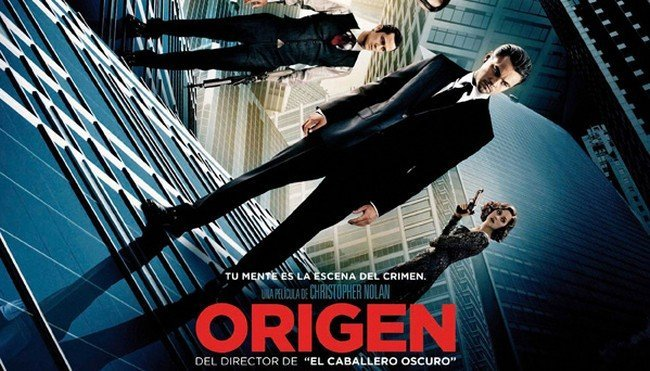
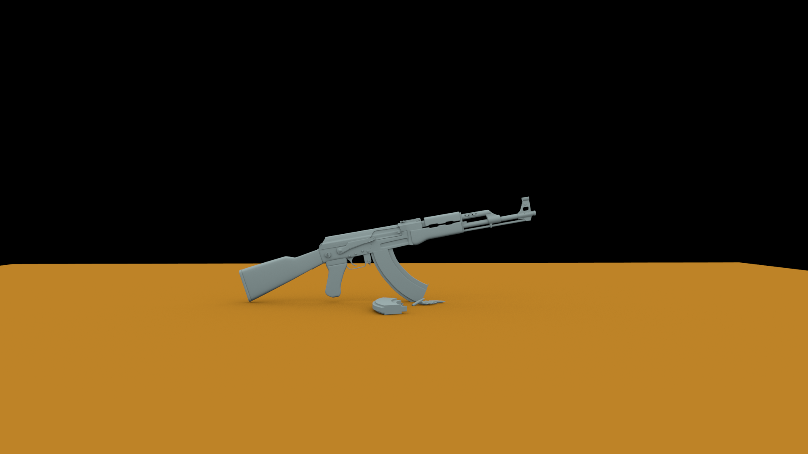

Render per capes
Aquest projecte va ser un dels primers que vaig fer en la meva formacio aUVic, l'assignatura vam fer tots els passos desde un bon principi, el modelat, les UV i el texturitzat en Substance painter

Aquest projecte va ser un dels primers que vaig fer en la meva formacio aUVic, l'assignatura vam fer tots els passos desde un bon principi, el modelat, les UV i el texturitzat en Substance painter
Aquest projecte va ser un dels primers que vaig fer en la meva formacio aUVic, l'assignatura vam fer tots els passos desde un bon principi, el modelat, les UV i el texturitzat en Substance painter
Aquest es un projecte de la assignatura de motion graphics en la que ens dedicavem a animar i produïr curts a partir de assets gratuïts o provinents del professorat.
En aquest cas vam treballar en parelles i vam utilitzar unes 10 hores per a fer tot el procés.
Per decisió del equip vam decidir treballar una mica tots dos en cada apartat del projecte, ja fos en generar animacións o fer el montatge perque el resultat fos del nostre agrat.
A continuació podeu veure el curt clicant a la següent imatge:
Aquí tenim un altre edició de video de la asignatura de motion graphics en el que podem veure un tràiler de la pel·lícula de Origen.
En aquest cas era treball individual en el que ens van proporcionar diversos retalls de la pel·lícula entre els que hi havia dues bandes sonores i els retalls de video.
A continuació podeu veure el tràiler clicant a la següent imatge:
Aquest projecte va ser un dels primers que vaig fer en la meva formacio aUVic, l'assignatura vam fer tots els passos desde un bon principi, el modelat, les UV i el texturitzat en Substance painter
